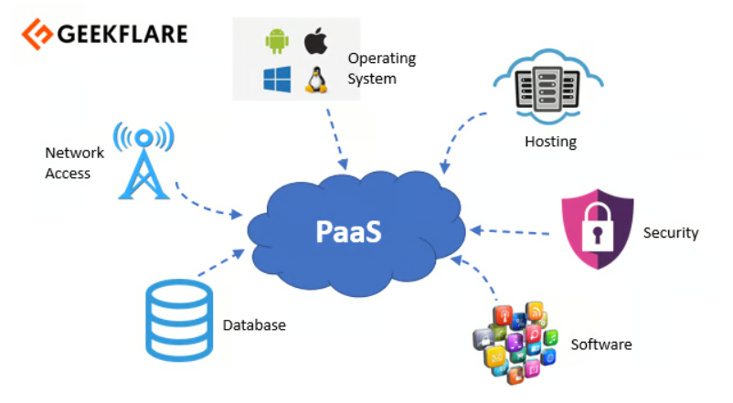

Plataforma como Servicio (PaaS)
El modelo de servicio PaaS permite a los consumidores desplegar aplicaciones en la infraestructura de la nube, usando lenguajes de programación, bibliotecas y herramientas soportadas por el proveedor. Aunque el consumidor no gestiona la infraestructura subyacente, tiene control sobre las aplicaciones desplegadas y algunas configuraciones del entorno de hospedaje. El proveedor de PaaS se encarga del mantenimiento, soporte y operación de las plataformas.
Ejemplos de PaaS:
- Correo electrónico y aplicaciones de oficina: Aplicaciones para correo electrónico, procesamiento de texto, hojas de cálculo, presentaciones, etc., dispuestos en la nube y con facturación según el uso.
- Plataformas para inteligencia de negocios.
- Bases de datos y servicios de almacenamiento.
- Herramientas de desarrollo y pruebas de software.
- Integración e implementación de aplicaciones.
